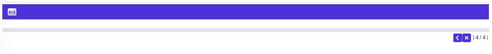

Ingreso de solicitudes Crédito nuevo
Documentos: Tercer paso del wizard que contiene los siguientes campos a diligenciar.
Muestra en bloques los diversos documentos o soportes que el cliente debe adjuntar acorde con los parámetros de solicitudes. Adicionalmente, los muestra de acuerdo a los tipos de categorías o clases de clientes, con los combos para verificar si dichos documentos ya fueron recibidos por la entidad o no.

El formulario cuenta con tres botones en la parte inferior derecha: Atrás, Cancelar, para volver al formulario inicial, y Salvar la solicitud.
Información general | Líneas de crédito | Consultar etapas|Ingreso de Adicionales